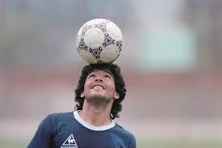

Diego Armando Maradona (1960–2020) es considerado uno de los mejores futbolistas de todos los tiempos. Su vida estuvo marcada tanto por sus extraordinarias hazañas en el campo como por las polémicas fuera de él. A continuación, se detalla una cronología de su vida y carrera:
Maradona nació el 30 de octubre de 1960 en Villa Fiorito, un barrio humilde de Buenos Aires, Argentina. Fue el quinto de ocho hijos.
A los 9 años, fue descubierto por un cazatalentos mientras jugaba en su equipo local, Los Cebollitas, filial del club Argentinos Juniors. Desde temprano mostró habilidades extraordinarias con el balón
Argentinos Juniors (1976–1981)
Debutó en la Primera División argentina el 20 de octubre de 1976, con solo 15 años.
En cinco años con Argentinos, anotó 116 goles en 166 partidos, lo que lo consolidó como una promesa del fútbol mundial.
Boca Juniors (1981–1982)
En 1981, fue transferido a Boca Juniors, el club de sus sueños, y rápidamente se convirtió en ídolo. Ayudó al equipo a ganar el campeonato Metropolitano en 1981.
Barcelona (1982–1984)
En 1982, después del Mundial de España, fue vendido al FC Barcelona por una cifra récord. Aunque mostró destellos de genialidad, su etapa en España estuvo marcada por lesiones (incluida una fractura por parte de Andoni Goikoetxea) y conflictos con la directiva.
Ganó la Copa del Rey y la Supercopa de España, pero salió del club en 1984.
Napoli (1984–1991)
Maradona llegó al Napoli, un club modesto del sur de Italia, y lo transformó en una potencia. Es considerado un ídolo eterno en Nápoles.

Card title
Seleccione aqui para ingresar a la informacion detallada